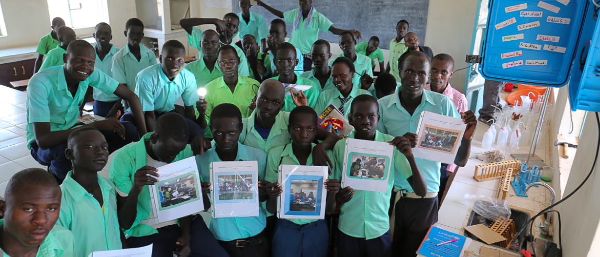
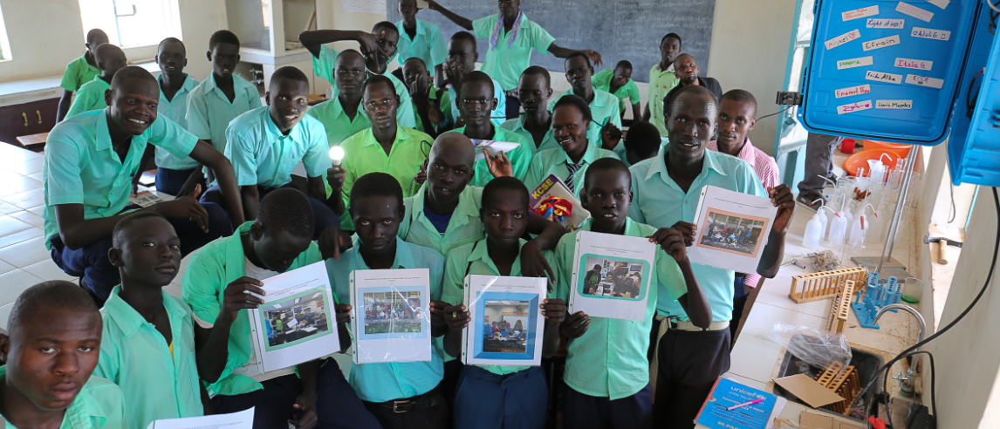

Kakuma has been the greatest opportunity for thasaunds of Refugees since the intiation of the camp in 1992.
The following Agencies have been supporting the Education in Kakuma Refugees and the Host community.
Kakuma has the primary School, and Secondary School as well the equal opportunity for higher Education
HERE ARE SOME OF THE PRIMARY SCHOOLS IN THE CAMP:

This school is located at kakuma 4 with dressing uniform of green T-shirt and blue trouser/skirt.
 

this is good video
Kakuma was formed in the year 1992 with the arrival of south sudanese from south sudan at the border of Napadal and were resettled at the Loki at the main reception point.
google